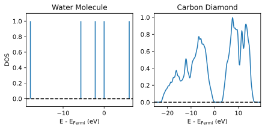
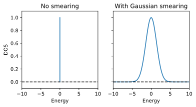
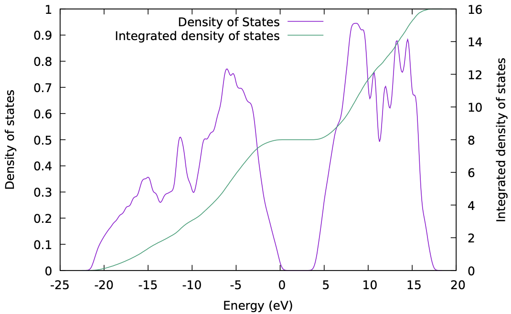

Metals and the Density of States
This week we'll be discussing the metallic systems and the electronic density of states. For metals, there are a couple of complications which mean we have to treat them differently from systems with a non-zero band gap.
As before, all the inpus and scripts you need can be found in
/opt/MSE404-MM/docs/labs/lab05 and you should make a copy of the folder to
your home directory.
Density of States
The electronic Density of states (DOS) describes the distribution of electronic states in a material with respect to their energy. More precisely, it tells us how many electronic states, for a system of volume V, can be occupied in a small (infinitesimal) energy range near a specific energy. The DOS is defined as:
where \(\epsilon_{n\mathbf{k}}\) are the Kohn-Sham eigenvalues for band \(n\) and \(k\)-point \(\mathbf{k}\).
For a molecular system, the DOS looks exactly the same to the eigenenergy spectrum and is discrete (with a constant hight of one), since we only have one set of molecular states. However, for periodic systems, each k-point has a set of eigenenergies and the DOS should become continuous. For example, here are two DOS plots of a water molecule (isolated system) and carbon diamond (periodic system):

Since the DOS and the band structure are both related the Kohn-Sham eigenvalues, intuitively, the DOS is also related to the band structures: bands with large energy dispersion in the Brillouin zone result in low DOS spread across a large interval, whereas less dispersive (more flat) bands result in high DOS near a small energy interval.
In insulators and semiconductors, the DOS is zero inside the band gap, as there are no available states in that energy range. Hence, the DOS can give us an accurate estimation of the band gap (unlike the band structure plot which only goes along a certain path in the Brillouin zone, DOS reflects eigenvalues of all k-points in the Brillouin zone).
Smearing
The definition of the DOS can also be represented as a sum over an infinite amount of k-points that sample the Brillouin zone (as \(\Delta\mathbf{k} \to 0\)):
However, since we can only have a finite sampling of the Brillouin zone, in pratice, interpolation of the \(\delta\) function (or, smearing) is used to artifically include some contributions from k-points that we missed.

While this scheme is quite fast and straight-forward, you'll need to tune the broadening energy so that your calculated density of states is smooth in the correct way:
- If you use too large a broadening, you may smear out important features.
- If you use too small a broadening you may introduce spurious features and your density of states plot will look very bumpy/spikey.
- In principle you would want the smearing to be comparable to the typical change in energy of a state from a k-point to its neighbours. In practice though it's easiest to just try different values until it looks right.
Tetrahedron Method
The other way to interpolate is to use the so-called tetrahedron method. Essentially this corresponds to doing a three dimensional linear interpolation from a regular grid of values. This calculation can be noticeably slower than using a broadening but there is no need to to worry about using the correct smearing. The density of states will simply become more finely featured as you increase the density of the k-point grid in the non-self-consistent calculation.
It's important to note that in a real measurement of the density of states of a system, there is an implicit broadening that comes from
-
Electron-phonon coupling: the states are not simply at a fixed energy, but will have some distribution as the atoms vibrate.
-
Any measurement probe will have a finite energy width associated with it, which will limit how finely it can resolve density of states features.
So while tetrahedron may seem the more accurate approach, you shouldn't necessarily think of it as a more correct representation of a real system.
Steps to Calculate the DOS
In a similar way to the electronic band structure, we produce the density of states plot in three steps.
Step 1 - SCF Calculation
Perform a self-consistent calculation as before, producing a converged charge density.
Task 10.1 - SCF Calculation
Run pw.x using the input file
 01_C_diamond_scf.in
for diamond.
01_C_diamond_scf.in
for diamond.
Step 2 - NSCF Calculation
Take the density calculated in the previous step and use it to perform a non-self-consistent calculation on a denser k-point grid. We want a good representation of how the state energies vary as we move around the Brillouin zone so we use a much denser grid here than we need to obtain a converged density in the previous step.
The difference between this and the band structure calculation is that here
we use a uniform sampling of the Brillouin zone, rather than a path between
k-points. The input file for this calculation can be found at
02_C_diamond_nscf.in:
1 2 3 4 5 6 7 8 9 10 11 12 13 14 15 16 17 18 19 20 21 22 23 24 25 26 27 | |
calculation = nscfspecifies that we are calculating the non-self-consistent calculation.nbnd = 8specifies that we want to calculate 8 bands.K_POINTS automaticspecifies that we are using an automatically generated k-point grid. We've increased the k-point sampling to a 20x20x20 grid, and we have removed the shift. Many systems have a valence band maximum or conduction band minimum at the gamma point, so it is good to ensure it's explicitly included in the grid.
Task 10.2 - NSCF Calculation
Run pw.x using the input file
02_C_diamond_scf.in
for diamond.
Step 3 - Density of States Calculation
Then, we need to convert the state energies calculated on this dense k-point
grid to a density of states using dos.x.
03_C_diamond_dos.in is the input
file for dos.x and contains just a DOS section:
1 2 3 4 | |
degaussspecifies the Gaussian broadening (in Rydberg) to use in the density of states calculation.DeltaEspecifies the spacing between points in the output file, in eV.
Note
we've picked values for these of similar magnitude despite their different
units. In fact if degauss is not specified, and no broadening scheme is
used in the DFT calculation, degauss will take the value of DeltaE by
default. You can check the documentation
INPUT_DOS for more
details.
Task 10.3 - Plotting Density of States
Run dos.x using the input file
03_C_diamond_dos.in
for diamond.
The final step produces a file named pwscf.dos by default. This is a simple
text file you can plot. It has three columns:
- Energy (eV)
- Density of States (states/eV)
- Integrated Density of States (states)
It is customary to shift the x-axis in the plot such that the Fermi energy
or valence band max is at 0. While a value for the Fermi level is given in
the file header of the generated pwscf.dos, this is determined in a simple
way from the integrated density of states. It may be worth obtaining this from
a separate calculation using a relatively small broadening if you're looking a
metallic system, while for semiconductors and insulators you could find the
maximum valence band state energy manually.
The directory 03_densityofstates contains a gnuplot and a python script that
can be used to plot the shifted DOS along with the integrated DOS:
Task 10.4 - Density of States Calculation
Plot the density of states using the script provided.
Final result

Metals
Metals have a Fermi surface that can be quite complex in k-space. This means that in contrast to an insulator or semiconductor where every k-point has the same number of occupied states, in a metal the number of occupied states can vary from k-point to k-point. Remembering that DFT is a gound state theory , a rapidly varying occupation number will make the calculation more difficult to converge.
Tackling Discontinuities
Generally, there are two things that we typically do for metals:
-
Use a denser k-point grid than you would need for a semiconductor or insulator. This is to help sampling the rapid change in the Fermi surface at different k-points.
-
Use some smearing scheme for the calculation of occupation number of bands at each k-point. This is in relation to the smearing used in the calculation of the
density of states. The difference is
that here the occupation is also smeared (i.e., can be a fractional number
between 0 and 1).To determine the occupation number at each SCF step, we first need to obtain the Fermi energy of the system. This is usually achieved by solving the following for \(E_F\):
\[ N_e = \int_{-\infty}^{E_F} \mathrm{DOS}(\varepsilon) f_T(E) dE \]where \(N_e\) is the number of electrons in the system \(f\) represents the Fermi-Dirac distribution function at temperature \(T\) and \(\mathrm{DOS}(\varepsilon)\) is the smeared density of states.
As we already know, the Fermi-Dirac function at 0K is a step function which would spoil the convergence of metals (due to discontinuities). Here, we simply raise the temperature to a small number (using the tag
degaussforpw.x) so that the Fermi-Dirac function is smeared out and the convergence can be achieved more easily. It is worth noting that other smearing methods such as gaussian smearing can also be used. Once the Fermi energy is found, the occupation function is determined and the occupation number at each k-point and band \(n\) can be easily calculated: $$ f_{n\mathbf{k}} = f_T(\varepsilon_{n\mathbf{k}} - E_F). $$ Adding a smearing to the occupation function helps significantly in achieving a smooth SCF convergence, as otherwise a small change in a state energy from once cycle to the next could lead to a very large change in its occupation and to the total energy in turn (this is called 'ill-conditioning'). We set the smearing scheme (for both DOS and occupation function) and width with theoccupationsanddegaussvariables in the input file.
Example: Aluminium
Aluminium forms in a standard FCC structure with one atom per unit cell, which we know how to deal with at this point. The thing about Aluminium that makes it more complicated within DFT is that it is a metal.
Here is an example input file for a calculation of Aluminium:
1 2 3 4 5 6 7 8 9 10 11 12 13 14 15 16 17 18 19 20 21 22 23 24 25 26 | |
- The
occupationsvariable is set tosmearingto tell Quantum Espresso to use a smearing schemeinput
description. - The
smearingvariable is set tofermi-diracto tell Quantum Espresso to use a Fermi-Dirac smearing scheme.input
description. - The
degaussvariable is set to 0.1d0 to set the width of the smearing. seeinput
description.
Task 10.5 - Smearing
First, run the pw.x calculation with the supplied input file in
02_aluminium/Al.in.
Then, look in the pwscf.xml file and find the various ks_energies
entries towards the end. These give the various k-points used in the
calculation and the energies and occupations of each state for this k-point.
Note, for a metal the default number of bands is at least four more than are
needed for the number of electrons per cell. The pseudopotential we have
used has 3 valence electrons, which could be represented with two
potentially doubly occupied bands, so we have four more bands in the
calculation for a total of 6.
Example
1 2 3 4 5 6 7 8 9 10 11 12 13 14 15 | |
Now, try removing the occupations and degauss variables from the input
file and see what happens when you try to run the calculation.
Example
1 2 3 4 | |
Summary
In this tutorial, we have learned:
- How to use the
dos.xcode from the Quantum Espresso package. - How to treat a metallic system.